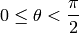

This section explains some features of the class Slab.
Slabs are handled by the module pylayers.antprop.slab
from pylayers.gis.layout import *
import matplotlib.pyplot as plt
L = Layout('TA-Office.ini')
L.build()
L.dumpw()
L.showG('i')
(<matplotlib.figure.Figure at 0x47ba350>,
<matplotlib.axes.AxesSubplot at 0x478ee10>)
Slab names¶
Each segment name, is the entry key for its constitutive Slab.
L.Gs.node[19]['name']
'PARTITION'
In the example above the node 20 of  is a
segment of name ‘PARTITION’, which is a key entry of the Slab
dictionnary.
is a
segment of name ‘PARTITION’, which is a key entry of the Slab
dictionnary.
Slab dictionnary¶
The layout L has a sl (slab dictionnary) member. This dictionnary contains all the available slabs of the layout. For this layout the keys of the sl dictionnary are :
L.sl.keys()
['WINDOW_GLASS',
'PLASTERBOARD_7CM',
'WALL',
'AIR',
'WINDOW',
'METALIC',
'PLASTERBOARD_14CM',
'DOOR',
'FLOOR',
'METAL',
'PARTITION',
'CONCRETE_20CM3D',
'PLASTERBOARD_10CM',
'CEIL',
'CONCRETE_6CM3D',
'CONCRETE_15CM3D',
'3D_WINDOW_GLASS',
'WALLS',
'WOOD',
'CONCRETE_7CM3D',
'PILLAR',
'ABSORBENT']
Slab Information¶
Each slab contains informations about their constitutive materials and their electromagnetic propreties.
Below an example for a simple slab, constituted with a single material. The slab ‘WOOD’ is made of material ‘WOOD’
L.sl['WOOD']['lmatname']
['WOOD']
L.sl['WOOD']['thickness']
(4.0, 0, 0, 0, 0, 0, 0, 0)
Until now the thickness attribute is a tuple with 8 values. This is for backward compatibility with Pulsray.
In the pure python version their will remains no reason to maintain this limitation.
Notice that in thickness the unit is centimeter, lthick is in SI unit i.e meters.
Ignore the existence of this attribute, use ‘lthick’ attribute instead.
L.sl['WOOD']['lthick']
[0.04]
L.sl['WOOD']['color']
'maroon'
L.sl['WOOD']['linewidth']
2
Multi layers Slab, using different stacks of materials can be easily defined using the two lists lmatname and lthick.
L.sl['3D_WINDOW_GLASS']['lmatname']
['GLASS', 'AIR', 'GLASS']
L.sl['3D_WINDOW_GLASS']['lthick']
[0.005, 0.005, 0.005]
For each constitutive material of a slab, their electromagnetic properties can be obtained as:
L.sl['3D_WINDOW_GLASS']['lmat']
[{'epr': (3.79999995232+0j),
'index': 4,
'mur': (1+0j),
'name': 'GLASS',
'roughness': 0.0,
'sigma': 0.0},
{'epr': (1+0j),
'index': 1,
'mur': (1+0j),
'name': 'AIR',
'roughness': 0.0,
'sigma': 0.0},
{'epr': (3.79999995232+0j),
'index': 4,
'mur': (1+0j),
'name': 'GLASS',
'roughness': 0.0,
'sigma': 0.0}]
Slab evaluation¶
Each Slab can be evaluated to obtain the Transmission and Reflexion coefficients for
- a given frequency range
- a given incidence angle range ()
fGHz = np.arange(1,5,0.05)
theta = np.arange(0,pi/2,0.01)
L.sl['WOOD'].ev(fGHz,theta,compensate=True)
sR = np.shape(L.sl['WOOD'].R)
print '\nHere, slab is evaluted for',sR[0],'frequency(ies)', 'and',sR[1], 'angle(s)\n'
Here, slab is evaluted for 80 frequency(ies) and 158 angle(s)
Transmission and Reflexion coefficient¶
From the evaluation reflexion and tramsmission coeffcient are computed for the given frequency range and theta range
ifreq=1
ithet=10
print '\nReflection coefficient @',fGHz[ifreq],'GHz and theta=',theta[ithet],':\n\n R=',L.sl['WOOD'].R[0,0]
print '\nTransmission coefficient @',fGHz[ifreq],'GHz and theta=',theta[ithet],':\n\n T=',L.sl['WOOD'].T[0,0],'\n'
Reflection coefficient @ 1.05 GHz and theta= 0.1 :
R= [[-0.46812931-0.06286165j 0.00000000+0.j ]
[ 0.00000000+0.j 0.46812931+0.06286165j]]
Transmission coefficient @ 1.05 GHz and theta= 0.1 :
T= [[ 0.72738249-0.48850885j 0.00000000+0.j ]
[ 0.00000000+0.j 0.72738249-0.48850885j]]
Ploting Coefficients¶
with respect to frequency
L.sl['WOOD'].plotwrtf(typ='mod')
plt.figure()
L.sl['WOOD'].plotwrtf(typ='phase')

with respect to angle
fGHz= np.array([2.4])
L.sl['WOOD'].ev(fGHz,theta)
L.sl['WOOD'].plotwrta()
wrt to angle and frequency
figsize(8,8)
fGHz= np.arange(0.7,5.2,0.1)
L.sl['WOOD'].ev(fGHz,theta)
L.sl['WOOD'].pcolor()